在这一章中，我们将讨论一种更高级的RNN变体，称为长短期记忆网络(lstm)。LSTMs 广泛用于许多顺序任务(包括股市预测、语言建模和机器翻译)，并已被证明比其他顺序模型(例如，标准rnn)执行得更好，尤其是在大量数据可用的情况下。LSTMs设计得很好，避免了我们在前一章讨论的消失梯度问题。
消失梯度造成的主要实际限制是它阻止模型学习长期依赖性。然而，通过避免消失梯度问题，LSTMs能够比普通rnn存储更长时间的记忆(数百个时间步长)。与那些仅保持单个隐藏状态的rnn相比，LSTMs具有更多的参数，并且可以更好地控制在给定的训练步骤中存储什么和丢弃什么。例如，rnn不能决定存储哪个存储器和丢弃哪个存储器，因为隐藏状态在每个训练步骤被强制更新。
具体来说，我们将在很高的层次上讨论什么是LSTM，以及lstm的功能如何允许它们存储长期依赖关系。然后，我们将进入管理LSTMs的实际基础数学框架，并讨论一个例子来强调为什么每个计算都很重要。我们还将比较lstm和普通rnn，并看到lstm具有更复杂的架构，允许它们在顺序任务中超过普通rnn。重温消失梯度的问题，并通过一个例子来说明它，将使我们理解LSTMs如何解决这个问题。
此后，我们将讨论几种已经引入的技术，以改进由标准LSTM产生的预测(例如，在文本生成任务中改进生成文本的质量/多样性)。例如，一次生成几个预测而不是逐个预测，有助于提高生成的预测的质量。我们还将研究 BiLSTMs 或双向LSTMs ，它们是标准LSTM的扩展，比标准LSTM具有更强的能力来捕获序列中存在的模式。
最后，我们将讨论两个最近的LSTM变种。首先，我们将看看窥视孔连接，它向LSTM门引入更多的参数和信息，使lstm能够更好地执行。接下来，我们将讨论门控循环单元 ( GRUs )，它们越来越受欢迎，因为与LSTMs相比，它们具有更简单的结构，并且不会降低性能。
在这一节中，我们将首先解释LSTM细胞内发生的事情。我们将会看到，除了状态之外，还有一个控制细胞内信息流的门控机制。然后，我们将完成一个详细的示例，看看每个门和状态如何在示例的不同阶段帮助实现所需的行为，最终导致所需的输出。最后，我们将比较LSTM和标准的RNN，以了解LSTM和标准的RNN有什么不同。
LSTMs可以被看作是rnn的一个更好的家族。LSTM主要由五种不同的东西组成:
- 单元状态:这是LSTM单元的内部单元状态(即存储器)
- 隐藏状态:该是用于计算预测的外部隐藏状态
- 输入门:该决定有多少电流输入被读入单元状态
- 遗忘门:该决定将多少先前的单元状态发送到当前单元状态
- 输出门:该决定有多少单元状态输出到隐藏状态
我们可以将RNN包装成如下的单元架构。该单元将输出依赖于(具有非线性激活函数)先前单元状态和当前输入的某个状态。然而，在RNNs中，单元状态总是随着每个输入而改变。这导致rnn的小区状态总是变化。对于存储长期依赖关系来说，这种行为是非常不可取的。
LSTMs可以决定何时替换、更新或忘记存储在细胞状态下每个神经元中的信息。换句话说，LSTMs配备了保持单元状态不变的机制(如果需要的话),使它们能够存储长期依赖关系。
这是通过引入门控机制来实现的。LSTMs拥有单元需要执行的每个操作的门。这些门在0和1之间是连续的(通常是sigmoid函数),其中0表示没有信息流过该门，1表示所有信息流过该门。LSTM为细胞中的每个神经元使用一个这样的门。如前所述，这些门控制以下内容:
- 有多少电流输入被写入单元状态(输入门)
- 从前一个单元状态中遗忘了多少信息(遗忘门)
- 有多少信息从单元状态(输出门)输出到最终隐藏状态
图7.1 说明了这一功能。每个门决定有多少不同的数据(例如，当前输入、先前的隐藏状态或先前的单元状态)流入状态(即，最终的隐藏状态或单元状态)。每条线的粗细表示有多少信息从该门流出或流入该门(在一些假设的场景中)。例如，在该图中，您可以看到输入门允许来自当前输入的比来自先前最终隐藏状态的多，其中遗忘门允许来自先前最终隐藏状态的比来自当前输入的多:
在这里，我们将带了解LSTMs的实际机制。我们将首先简要讨论LSTM单元格的整体视图，然后开始讨论发生在LSTM单元格内的每个操作，以及一个文本生成的例子。
如前所述，LSTMs主要由以下三个门组成:
- 输入门:输出0(当前输入未写入单元状态)和1(当前输入完全写入单元状态)之间的值的门。Sigmoid激活用于将输出压缩到0和1之间。
- 遗忘门:s形门，输出0(计算当前单元状态时完全遗忘前一单元状态)和1(计算当前单元状态时完全读入前一单元状态)之间的值。
- 输出门:一个s形门，输出0(计算最终状态时完全丢弃当前单元状态)和1(计算最终隐藏状态时完全使用当前单元状态)之间的值。
这可以是图7.2 中的所示的。这是一个非常高级的图，为了避免混乱，隐藏了一些细节。为了提高理解，我们给出了带循环和不带循环的LSTMs。右侧的图描绘了具有环的LSTM，而左侧的图显示了具有扩展环的相同LSTM，因此模型中不存在环:
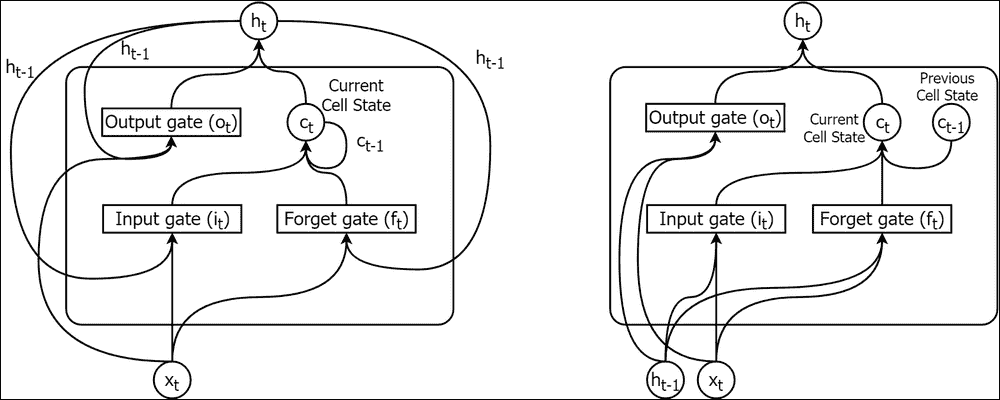
图7.2:具有循环链路(即环路)的LSTM(右)具有扩展的循环链路的LSTM(左)
现在，为了更好地理解LSTMs，让我们考虑一个例子。我们将讨论实际的更新规则和公式，并通过一个例子来更好地理解LSTMs。
现在让我们考虑一个从下面的句子开始生成文本的例子:
约翰给了玛丽一只小狗。
我们输出的故事应该是关于约翰、玛丽和小狗的。让我们假设我们的LSTM在给定的句子后输出两个句子:
约翰给了玛丽一只小狗。____________________._____________________.
下面是我们LSTM给出的输出:
约翰给了玛丽一只小狗。它叫得很大声。他们把它命名为露娜。
我们离输出这样真实的短语还很远。然而，LSTMs可以学习诸如名词和代词之间的关系。例如，它与小狗有关，而它们到约翰和玛丽。然后，它应该学习名词/代词和动词之间的关系。比如对于 it 来说，动词的结尾要有一个 s 。我们在图7.3 中说明了这些关系/依赖关系。两者我们都可以看到，长期的(例如露娜 → 小狗)和短期的(例如它 → 吠叫)依赖都存在于这个短语中。实线箭头表示名词和代词之间的联系，虚线箭头表示名词/代词和动词之间的联系:
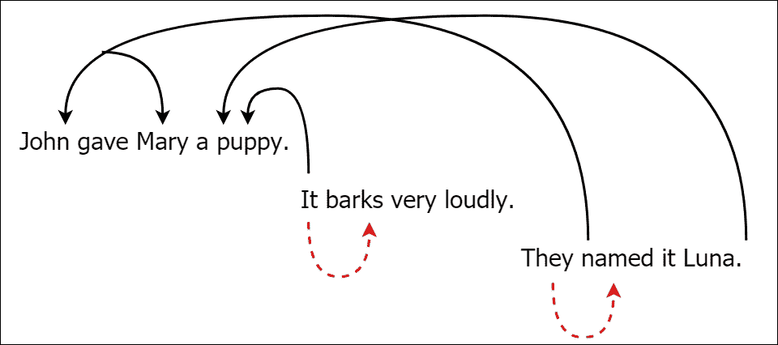
图7.3:LSTM给出和预测的句子，单词之间的各种关系被突出显示
现在让我们考虑LSTMs如何使用它们的各种操作，对这样的关系和依赖关系建模，以输出有意义的文本，给定一个起始句子。
输入门( i t )将当前输入( x t )和之前的最终隐藏状态( h t-1 )作为输入，计算 i t ，如下:
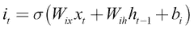
输入门， i t 可以理解为在具有s形激活的单隐藏层标准RNN的隐藏层执行的计算。请记住，我们计算标准RNN的隐藏状态如下:
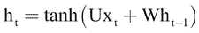
因此，LSTM的ItT23】的计算看起来非常类似于标准RNN的htT27】的计算，除了激活函数的改变和偏置的增加。
在计算之后， i t 的值0将意味着没有来自当前输入的信息将流向单元状态，其中值1意味着来自当前输入的所有信息将流向单元状态。
接下来，另一个值(称为候选值)被计算如下，该值被添加以稍后计算当前单元状态:
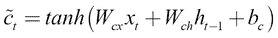
我们可以在图7.4 中看到这些计算:
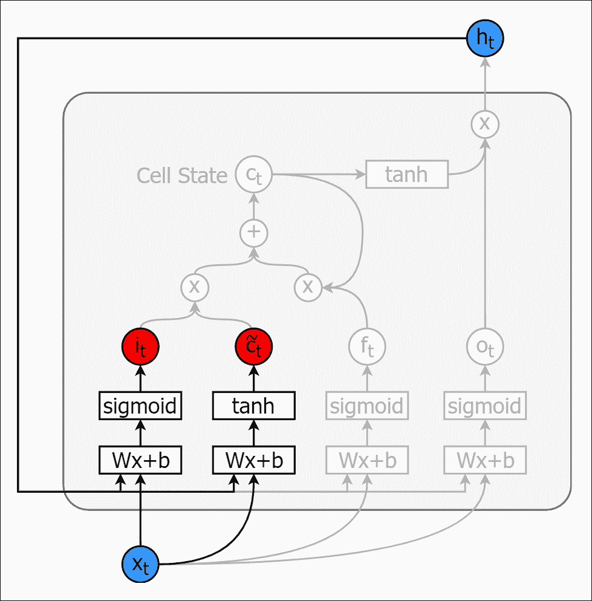
图7.4。在LSTM中发生的所有计算(灰显)的上下文中，计算It和 (粗体)
(粗体)
在我们的例子中，在学习的最开始，输入门需要被高度激活。LSTM输出的第一个字是 it 。同样为了这样做，LSTM必须了解到小狗也被称为它。让我们假设我们的LSTM有五个神经元来存储状态。我们希望LSTM存储信息，即 it 指的是小狗。我们希望LSTM(在不同的神经元中)学习的另一条信息是，当使用代词 it 时，现在时态动词应该在动词末尾有一个 s 。LSTM需要知道的另一件事是小狗会大声叫。图7.5 说明了如何将这些知识编码到 LSTM的单元状态中。每个圆圈代表单个神经元(即隐藏单元)的细胞状态:
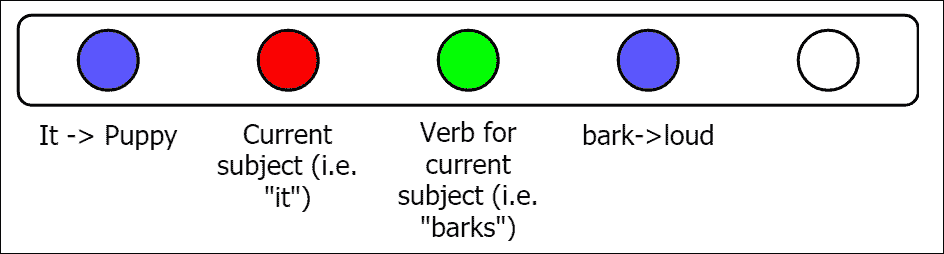
图7.5:应该在单元格状态中编码以输出第一句话的知识
有了这些信息，我们可以输出第一个新句子:
约翰给了玛丽一只小狗。它叫得很大声。
接下来，遗忘门的计算如下:
遗忘门执行以下操作。遗忘门的值为0意味着没有来自ct-1T5】的信息将被传递来计算ctT9】，值为1意味着ct-1T13】的所有信息将传播到ctT17】的计算中。
现在我们来看看遗忘之门是如何帮助预测下一句话的:
他们把它命名为露娜。
现在你可以看到，我们正在看的新关系是在约翰和玛丽之间。因此，我们不再需要关于它和动词吠叫如何表现的信息，因为主语是约翰和玛丽。我们可以使用遗忘门结合当前主题它们和相应的名为的动词来替换存储在当前主题和动词中的信息用于当前主题神经元(参见图7.6 ):
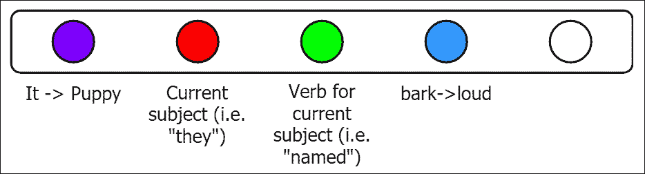
图7.6:左起第三个神经元中的知识(它 → 叫)被新的信息(它们 → 命名)取代。
根据权重的值，我们在图7.7 中说明了这种转换。我们不改变神经元维持it→puppy关系的状态，因为 puppy 在最后一句中是作为宾语出现的。这是通过设置连接it→puppy从 c t-1 到 c t 到1的权重来实现的。然后我们会用新的主语和动词替换维护当前主语和当前动词信息的神经元。这是通过将该神经元的ftt的遗忘权重设置为0来实现的。然后我们将当前主语和动词连接到对应状态神经元的 i t 的权重设置为1。我们可以将 视为包含哪些新信息(例如来自当前输入xtT85】的新信息)应该被带入单元状态的实体:
视为包含哪些新信息(例如来自当前输入xtT85】的新信息)应该被带入单元状态的实体:
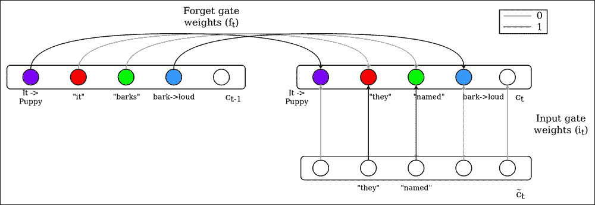
图7.7:如何用前一状态cT6】t-1和候选值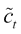计算单元格状态 c t
当前单元状态将更新如下:
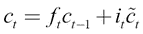
换句话说，当前状态是以下各项的组合:
- 要忘记/记住来自先前细胞状态的什么信息
- 向当前输入添加/丢弃什么信息
接下来在图7.8 中，我们强调了到目前为止我们针对LSTM内部发生的所有计算所进行的计算:
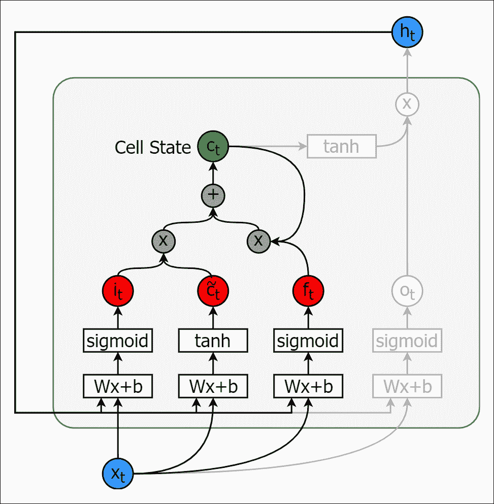
图7.8:目前已覆盖的计算包括 i t 、 f t 、和 c t
学习完完整状态后，它将看起来像图7.9 :
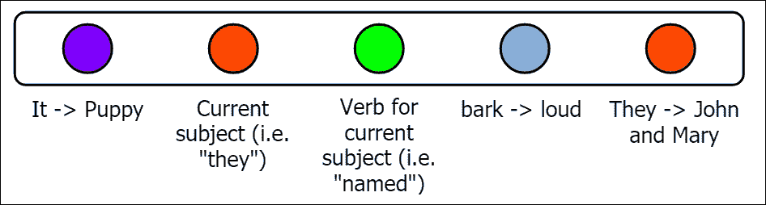
图7.9:输出两个句子后，完整的单元格状态看起来像这样
接下来，我们将看看LSTM单元的最终状态( h t )是如何计算的:
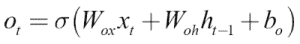
在我们的示例中，我们希望输出下面的句子:
他们把它命名为露娜。
为此，我们不需要倒数第二个神经元来计算这句话，因为它包含关于小狗如何吠叫的信息，而这句话是关于小狗的名字。因此，我们可以在最后一句话的预测过程中忽略最后一个神经元(包含吠- >大声的关系)。这正是ott所做的；在计算LSTM单元的最终输出时，它将忽略不必要的内存，只从单元状态中检索相关的内存。同样，在图7.10 中，我们展示了一个LSTM细胞看起来的样子:
这里，我们总结了所有与LSTM单元内发生的操作相关的方程式。
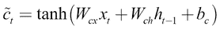
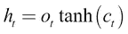
现在，在更大的画面中，对于一个顺序学习问题，我们可以随着时间的推移展开LSTM细胞，以显示它们如何链接在一起，以便它们接收细胞的前一状态来计算下一状态，如图图7.11 所示:
然而，这不足以做一些有用的事情。正如你所看到的，即使我们可以创建一个很好的LSTMs链，实际上能够模拟一个序列，我们仍然没有输出或预测。但是如果我们想使用LSTM实际学到的东西，我们需要一种方法从LSTM中提取最终输出。因此，我们将在LSTM的顶部固定一个softmax层(权重为 W s ，偏移为 b s )。最终输出通过下式获得:
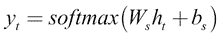
现在，带有softmax图层的LSTM的最终图片看起来像图7.12 :
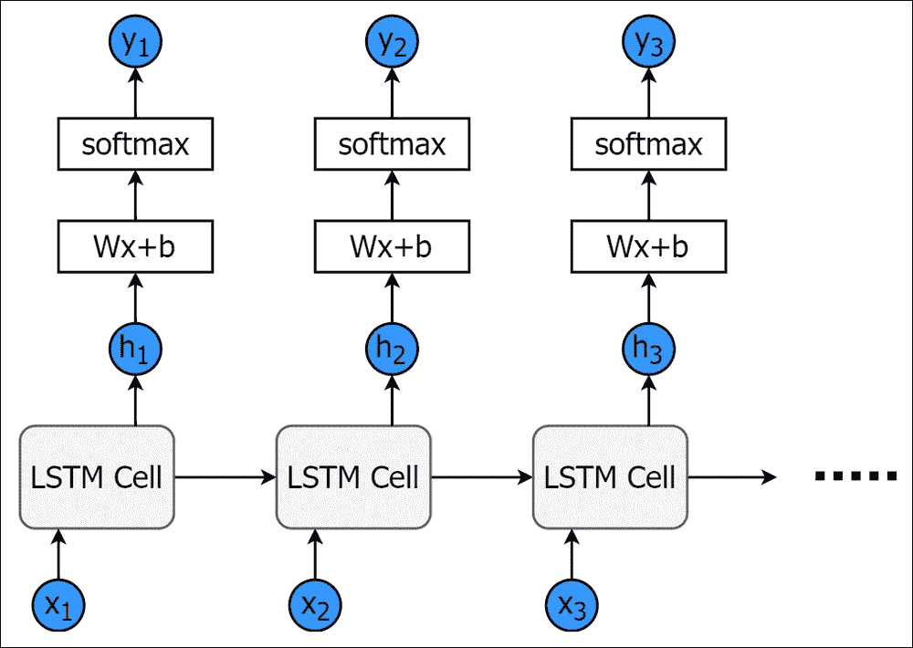
图7.12:具有softmax输出图层的LSTMs随时间的变化
现在让我们研究LSTMs与标准rnn相比如何。与标准RNN相比，LSTM具有更复杂的结构。其中一个主要区别是LSTM有两种不同的状态:单元状态cT15】t和最终隐藏状态htT20】。然而，一个RNN只有一个隐藏状态htT24】。下一个主要区别是，由于LSTM有三个不同的门，所以在计算最终隐藏状态htT28】时，LSTM对如何处理当前输入和前一个单元状态有更多的控制。
拥有两种不同的状态是非常有利的。利用这种机制，即使当单元状态快速改变时，最终隐藏状态仍然会改变得更慢。因此，当单元状态正在学习短期和长期依赖性时，最终隐藏状态可以仅反映短期依赖性或者仅反映长期依赖性或者两者都反映。
接下来，门控机制由三个门组成:输入门、遗忘门和输出门:
- 输入门控制有多少电流输入被写入单元状态
- 遗忘门控制有多少先前单元状态被带到当前单元状态
- 最后，输出门控制有多少从单元状态传播到最终隐藏状态
很明显，这是一种更有原则的方法(尤其是与标准RNNs相比)，它允许更好地控制当前输入和先前小区状态对当前小区状态的贡献。此外，输出门可以更好地控制单元状态对最终隐藏状态的贡献。在图7.13 中，我们比较了标准RNN和LSTM的示意图，以强调两种型号在功能上的差异。
总之，通过维护两种不同状态的设计，LSTM可以学习短期和长期依赖关系，这有助于解决消失梯度的问题，我们将在下一节中讨论。
正如我们之前讨论的，尽管rnn理论上是合理的，但实际上它们有一个严重的缺点。也就是说，当使用通过时间(【BPTT】)的反向传播时，梯度迅速减小，这允许 us仅传播几个时间步长的信息。因此，我们只能存储很少时间步的信息，因此只拥有短期记忆。这反过来限制了rnn在现实世界顺序任务中的有用性。
通常有用和有趣的顺序任务(如股票市场预测或语言建模)需要学习和存储长期依赖性的能力。想一想下面预测下一个单词的例子:
约翰是个有天赋的学生。他是优等生，打橄榄球和板球。所有其他学生都羡慕______。
对我们来说，这是一项非常容易的任务。答案是约翰。然而，对于一个RNN人来说，这是一项艰巨的任务。我们正试图预测一个答案，它就在这篇文章的开头。此外，为了解决这个任务，我们需要一种方法来存储RNN的长期依赖关系。这正是LSTMs要解决的任务类型。
在第6章、递归神经网络中，我们讨论了在没有任何非线性函数存在的情况下，消失/爆炸梯度是如何出现的。我们现在将看到，即使存在非线性项，它仍然可能发生。为此，我们将看到衍生项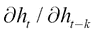如何用于标准RNN和LSTM (  用于LSTM)网络。这个是导致渐变消失的关键术语，正如我们在前一章中了解到的。
用于LSTM)网络。这个是导致渐变消失的关键术语，正如我们在前一章中了解到的。
让我们假设标准RNN的隐藏状态计算如下:
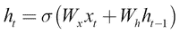
为了简化计算，我们可以忽略当前输入相关项，而专注于循环部分，这将给出以下等式:
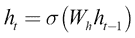
如果我们为前面的等式计算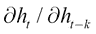，我们将得到以下结果:
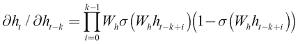
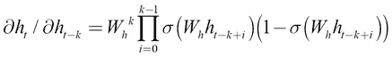
现在让我们看看当 或
或 时会发生什么(这将随着学习的继续而发生)。在这两种情况下，
时会发生什么(这将随着学习的继续而发生)。在这两种情况下， 将开始接近0，导致渐变消失。甚至当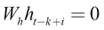时，对于乙状结肠激活，梯度最大(0.25)，当乘以许多时间步长时，总梯度变得相当小。此外，术语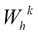(可能是由于糟糕的初始化)也会导致渐变的爆炸或消失。然而，与由于
将开始接近0，导致渐变消失。甚至当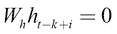时，对于乙状结肠激活，梯度最大(0.25)，当乘以许多时间步长时，总梯度变得相当小。此外，术语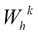(可能是由于糟糕的初始化)也会导致渐变的爆炸或消失。然而，与由于 或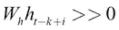导致的梯度消失相比，由术语
或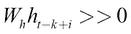导致的梯度消失相比，由术语 导致的梯度消失/爆炸相对容易解决(通过权重和梯度剪裁的仔细初始化)。
导致的梯度消失/爆炸相对容易解决(通过权重和梯度剪裁的仔细初始化)。
现在让我们来看看LSTM细胞。更具体地说，我们将查看单元状态，由以下等式给出:
这是在LSTM发生的所有忘记门应用的产品。然而，如果您以类似的方式为LSTMs计算 (即，忽略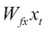项和bf，因为它们是非递归的)，我们会得到以下结果:
(即，忽略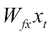项和bf，因为它们是非递归的)，我们会得到以下结果:
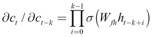
在这种情况下，尽管如果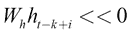梯度将消失，另一方面，如果 ，导数将比在标准RNN中下降得更慢。因此，我们有一个选择，梯度不会消失。此外，由于使用了挤压功能，梯度不会因为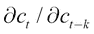变大而爆炸(这在梯度爆炸过程中很可能发生)。此外，当
，导数将比在标准RNN中下降得更慢。因此，我们有一个选择，梯度不会消失。此外，由于使用了挤压功能，梯度不会因为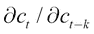变大而爆炸(这在梯度爆炸过程中很可能发生)。此外，当 时，我们得到接近1的最大梯度，这意味着梯度不会像我们在RNNs中看到的那样快速下降(当梯度最大时)。最后，在推导中没有诸如
时，我们得到接近1的最大梯度，这意味着梯度不会像我们在RNNs中看到的那样快速下降(当梯度最大时)。最后，在推导中没有诸如 这样的术语。然而，对于
这样的术语。然而，对于 ，推导更加复杂。让我们看看这些术语是否出现在
，推导更加复杂。让我们看看这些术语是否出现在 的推导中。如果你计算它的导数，你会得到如下形式的结果:
的推导中。如果你计算它的导数，你会得到如下形式的结果:
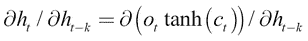
一旦你解决了这个问题，你会得到这样的东西:
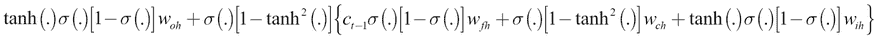
我们并不关心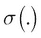或者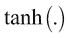里面的内容，因为无论什么值，都会被(0，1)或者(-1，1)所有界。如果我们进一步简化符号，将 、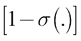、
、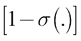、 和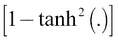项替换为一些常见符号，如
和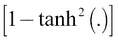项替换为一些常见符号，如 ，我们会得到以下形式的内容:
，我们会得到以下形式的内容:
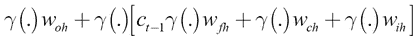
或者，我们得到以下结果(假设外面的 被方括号内的每个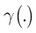项吸收):
被方括号内的每个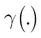项吸收):
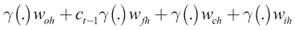
这将给出以下内容:
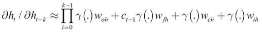
这意味着尽管术语 不受任何术语
不受任何术语 的影响，但
的影响，但 却不是。因此，我们必须小心初始化LSTM的权重，我们也应该使用梯度裁剪。
却不是。因此，我们必须小心初始化LSTM的权重，我们也应该使用梯度裁剪。
注意
然而，LSTMs的 h t 不受消失梯度的影响并不像RNNs那样重要。因为 c t
正如我们在学习rnn时已经看到的那样，拥有坚实的理论基础并不总是保证它们在实践中表现最佳。这是由于计算机数值精度的限制。对于LSTMs来说也是如此。拥有一个复杂的设计(允许对数据的长期相关性进行更好的建模)本身并不意味着LSTM会输出完美的现实预测。因此，已经开发了许多扩展来帮助LSTMs在预测阶段执行得更好。在这里，我们将讨论几个这样的改进:贪婪的采样，波束搜索，使用单词向量代替单词的一个热编码表示，以及使用双向LSTMs。
如果我们试图总是以最高的概率预测单词，LSTM将倾向于产生非常单调的结果。例如，在切换到另一个单词之前，它会多次重复单词到。
解决这个问题的一个方法是使用贪婪采样，我们从那个集合中挑选预测最佳的 n 并采样。这有助于打破预测的单调性质。
让我们考虑前一个例子的第一句话:
约翰给了玛丽一只小狗。
假设，我们从第一个单词开始，想要预测接下来的四个单词:
约翰____ ____ _ _____。
如果我们试图确定性地选择样本，LSTM可能会输出如下内容:
约翰把玛丽送给了约翰。
但是，通过从词汇表中的单词子集(最有可能的单词)中抽取下一个单词，LSTM被迫改变预测，并可能输出以下内容:
约翰给了玛丽一只小狗。
或者，它会给出以下输出:
约翰给了小狗一只。
但是，即使贪婪采样有助于给生成的文本增加更多的变化，这种方法也不能保证输出总是真实的，尤其是在输出较长的文本序列时。现在，我们将看到一种更好的搜索技术，它实际上比预测提前了几个步骤。
波束搜索是帮助提高由LSTM产生的预测质量的一种方式。在这种情况下，通过解决搜索问题来找到预测。波束搜索的关键思想是一次产生 b 输出(即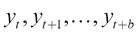)，而不是单个输出 y t 。这里， b 称为光束的长度，产生的 b 输出称为光束。更严格地说，我们选择具有最高联合概率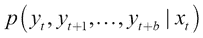的波束，而不是选择最高概率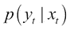。在做出预测之前，我们对未来看得更远，这通常会带来更好的结果。
让我们通过前面的例子来理解波束搜索:
约翰给了玛丽一只小狗。
说，我们是一个字一个字的预测。最初我们有以下内容:
约翰____ ____ _ _____。
让我们假设我们的LSTM使用波束搜索生成了这个例句。那么每个单词的概率可能会像我们在图7.13 中看到的那样。让我们假设波束长度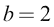，我们将在搜索的每个阶段考虑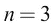最佳候选。搜索树如下图所示:
图7.13:b = 2，n=3时波束搜索的搜索空间
我们从单词约翰开始，得到词汇表中所有单词的概率。在我们的例子中，作为，我们为树的下一级挑选最好的三个候选人:give、 Mary 和 puppy 。(请注意，这些可能不是实际LSTM发现的候选，仅用作示例。)然后，从这些选择的候选者中，生长树的下一层。从那里，我们将挑选最好的三个候选，搜索将重复进行，直到我们到达树中的深度 b 。
给予最高联合概率的路径(即)用粗箭头突出显示。此外，这是一个更好的预测机制，因为它会返回更高的概率，或奖励，例如约翰给玛丽的短语比约翰给玛丽的短语更高。
注意，在我们的例子中，贪婪采样和波束搜索产生的输出是相同的，这是一个包含五个单词的简单句子。然而，当我们将此缩放以输出一篇小短文时，情况并非如此。那么由波束搜索产生的结果将比由贪婪采样产生的结果更加真实并且语法正确。
提高LSTM性能的另一种流行的方法是使用字向量，而不是使用一位热编码向量作为LSTM的输入。我们通过一个例子来了解一下这个方法的价值。假设我们想从某个随机单词开始生成文本。在我们的例子中，应该是这样的:
约翰____ ____ _ _____。
我们已经用下列句子训练了我们的LSTM:
约翰给了玛丽一只小狗。玛丽送给鲍勃一只小猫。
我们还假设我们有如图图7.15 所示的单词向量:
单词这些单词的嵌入，以它们的数字形式，可能看起来像下面这样:
小猫:[0.5，0.3，0.2]
小狗:[0.49，0.31，0.25]
给了:[0.1，0.8，0.9]
可以看到那个。但是，如果我们使用一键编码，它们将如下所示:
小猫:[ 1，0，0，…]
小狗:[0，1，0，…]
给了:[0，0，1，…]
然后，。正如我们已经看到的，一个热点编码的向量没有捕捉单词之间的正确关系，并且看到所有的单词彼此之间的距离相等。然而，词向量能够捕捉这种关系，并且更适合作为LSTM的特征。
使用单词向量，LSTM将学会更好地利用单词之间的关系。例如，通过单词向量，LSTM将学习以下内容:
约翰给了玛丽一只小猫。
这与以下内容非常接近:
约翰给了玛丽一只小狗。
此外，它与以下内容有很大不同:
约翰给了玛丽一个礼物。
然而，如果使用一位热编码矢量，情况就不是这样了。
使LSTM双向是提高LSTM预测质量的另一种方式。我们的意思是用从开始到结束以及从结束到开始读取的数据来训练LSTM。到目前为止，在LSTM的训练期间，我们将创建如下数据集:
考虑下面两句话:
约翰给了玛丽一个_____。它叫得很大声。
然而，在这个阶段，在我们希望LSTM合理填充的一个句子中有数据丢失。
如果我们从头开始阅读直到缺失的单词，将如下所示:
约翰给了玛丽一个_____。
这没有提供足够的关于丢失单词的上下文的信息来正确地填充该单词。但是，如果我们从两个方向阅读，结果将如下:
约翰给了玛丽一个_____。
_____。它叫得很大声。
如果我们用这两部分创建数据，就足以预测丢失的单词应该是类似于狗或小狗的东西。因此，某些问题可以从两边读取数据中受益匪浅。此外，这增加了神经网络可用的数据量，并提高了其性能。
BiLSTMs的另一个应用是神经机器翻译，我们将源语言的句子翻译成目标语言。由于一种语言到另一种语言的翻译之间没有特定的一致性，了解源语言的过去和未来可以极大地帮助更好地理解上下文，从而产生更好的翻译。例如，考虑将菲律宾语翻译成英语的翻译任务。在菲律宾语中，句子通常按照动词-宾语-主语的顺序书写，而在英语中，则是主语-动词-宾语。在这项翻译任务中，向前和向后阅读句子对翻译很有帮助。
BiLSTM实际上是两个独立的LSTM网络。一个网络从头到尾学习数据，另一个网络从头到尾学习数据。在图7.16 中，我们展示了一个BiLSTM网络的架构。
培训分两个阶段进行。首先，用从头到尾阅读文本所创建的数据来训练纯色网络。该网络代表用于标准LSTMs的正常培训程序。第二，用反向阅读文本产生的数据训练虚线网络。然后，在推断阶段，我们使用实线和虚线状态的信息(通过连接两种状态并创建向量)来预测丢失的单词:
虽然我们主要关注标准LSTM架构，但是已经出现了许多变体，它们或者简化了标准lstm中的复杂架构，或者产生了更好的性能，或者两者兼而有之。我们将着眼于两个变种，介绍LSTM的细胞结构的结构修改:窥视孔连接和GRUs。
窥视孔连接允许门不仅能看到当前输入和先前的最终隐藏状态，还能看到先前的单元状态。这增加了LSTM池中的砝码数量。具有这样的连接已经显示出产生更好的结果。这些方程看起来像这样:
让我们简单地看一下这是如何帮助LSTM表现得更好的。到目前为止，门看到的是当前输入和最终隐藏状态，而不是单元状态。然而，在这种配置中，如果输出门接近零，即使当单元状态包含对于更好的性能至关重要的重要信息时，最终的隐藏状态将是接近零的。因此，在计算过程中，门不会考虑隐藏状态。将单元状态直接包含在门计算公式中，可以更好地控制单元状态，即使在输出门接近零的情况下，它也能很好地工作。
我们在图7.17 中展示了带有窥视孔连接的LSTM的架构。我们将标准LSTM中的所有现有连接都显示为灰色，新添加的连接显示为黑色:
图7.17:带有窥视孔连接的LSTM(窥视孔连接显示为黑色，而其他连接显示为灰色)
GRUs 可以被视为标准LSTM架构的简化。正如我们已经看到的，LSTM有三个不同的门和两个不同的状态。仅这个就需要大量的参数，即使对于小的状态大小。因此，科学家研究了减少参数数量的方法。gru就是这样一个努力的结果。
与LSTMs相比，gru有几个主要区别。
首先，GRUs将两个状态，单元格状态和最终隐藏状态，合并成一个隐藏状态htT13】。现在，作为这个没有两个不同状态的简单修改的副作用，我们可以去掉输出门。记住，输出门仅仅是决定有多少单元状态被读入最终隐藏状态。该操作大大减少了单元中的参数数量。
接下来，GRUs 引入了一个重置门，当它接近1时，在计算当前状态时，会获取完整的先前状态信息。此外，当复位门接近0时，它在计算当前状态时会忽略先前的状态。
然后，GRUs将输入门和遗忘门合并成一个更新门。标准LSTM有两个门，称为输入门和遗忘门。输入门决定有多少当前输入被读入单元状态，而遗忘门决定有多少先前单元状态被读入当前单元状态。从数学上讲，这可以表示如下:
GRUs将这两个操作合并成一个门，称为更新门。如果更新门为0，则先前单元状态的完整状态信息被推入当前单元状态，其中没有当前输入被读入该状态。如果更新门为1，则所有的当前输入被读入当前单元状态，并且没有先前的单元状态被传播到当前单元状态。换句话说，输入门IT2【t】T3】变成了遗忘门的逆，也就是:
现在让我们把所有的方程放到一个地方。GRU 的计算看起来像这样:
这比LSTMs紧凑得多。在图7.18 中，我们可以看到GRU单元格(左)和LSTM单元格(右)并排在一起:
图7.18:GRU(左)和标准LSTM(右)的对比
在本章中，您了解了LSTM网络。首先，我们讨论了什么是LSTM及其高级架构。我们还深入研究了LSTM中发生的详细计算，并通过一个示例讨论了计算。
我们看到LSTM主要由五种不同的东西组成:
- 单元状态:LSTM单元的内部单元状态
- 隐藏状态:用于计算预测的外部隐藏状态
- 输入门:决定有多少电流输入被读入单元状态
- 遗忘门:决定将多少先前的单元状态发送到当前单元状态
- 输出门:决定有多少单元状态输出到隐藏状态
拥有如此复杂的结构使得LSTMs能够很好地捕捉短期和长期的依赖关系。
我们比较了lstm和普通rnn，发现lstm实际上能够学习作为其结构固有部分的长期依赖性，而rnn不能学习长期依赖性。之后，我们讨论了LSTMs如何利用其复杂的结构求解消失梯度。
然后，我们讨论了几种改进LSTMs性能的扩展。首先，一个非常简单的技术，我们称之为贪婪采样，其中，我们不是总是输出最佳候选，而是从一组最佳候选中随机采样一个预测。我们看到这提高了生成文本的多样性。接下来，我们研究了一种更复杂的搜索技术，称为波束搜索。这样，我们不再预测未来的单个时间步，而是预测未来的几个时间步，并挑选出产生最佳联合概率的候选项。另一项改进是了解词向量如何帮助提高LSTM的预测质量。使用单词向量，LSTM可以更有效地学习在预测期间替换语义相似的单词(例如，LSTM可能会输出猫，而不是输出狗)，从而导致生成的文本更加真实和正确。我们考虑的最后一个扩展是BiLSTMs或双向LSTMs。BiLSTMs的一个流行应用是填充短语中缺失的单词。比尔斯特姆从两个方向阅读文本，从开头到结尾，从结尾到开头。这提供了更多的背景信息，因为我们在预测之前既要看过去又要看未来。
最后，我们讨论了普通LSTMs的两种变体:窥视孔连接和GRUs。Vanillan LSTMs在计算门时，只查看当前输入和隐藏状态。使用窥视孔连接，我们使门计算依赖于所有:当前输入、隐藏和单元状态。
gru是普通lstm的一个更加优雅的变体，它简化了lstm而不影响性能。gru只有两个门和一个状态，而vanilla LSTMs有三个门和两个状态。
在下一章中，我们将看到所有这些不同的架构和它们的实现，并看看它们在文本生成任务中的表现。